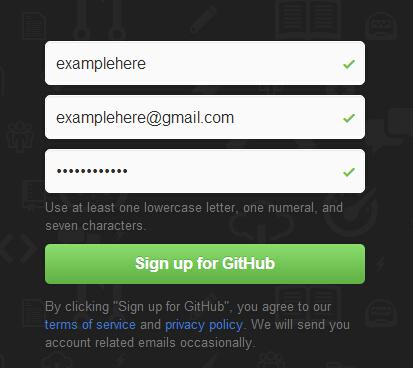
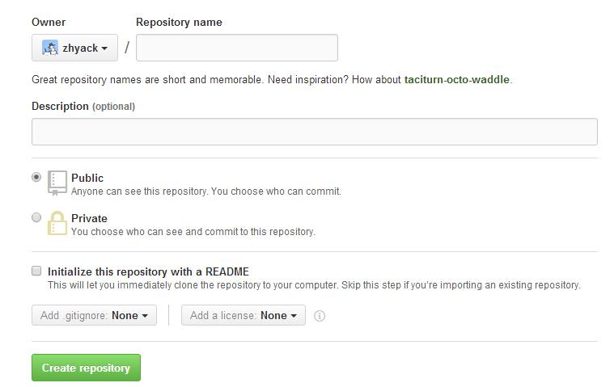
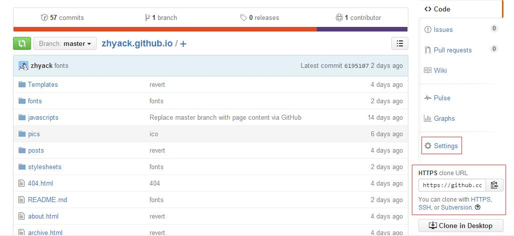
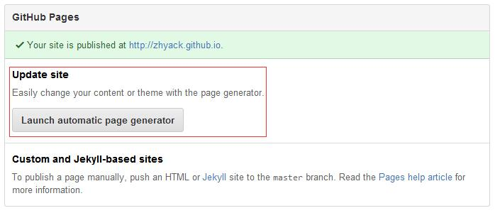
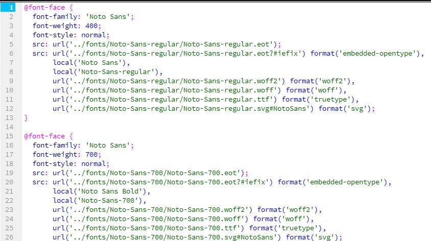
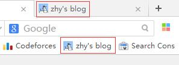
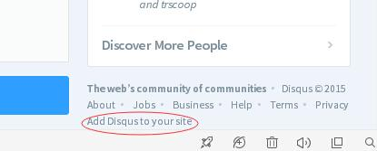
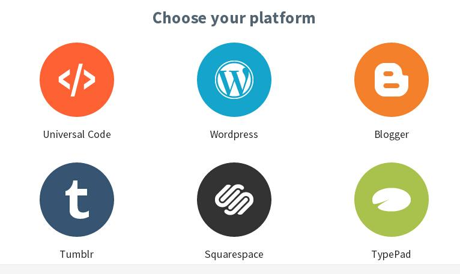
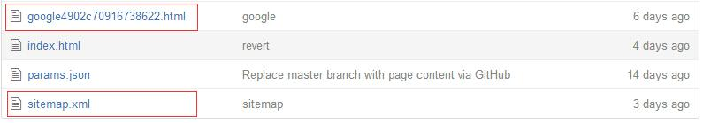
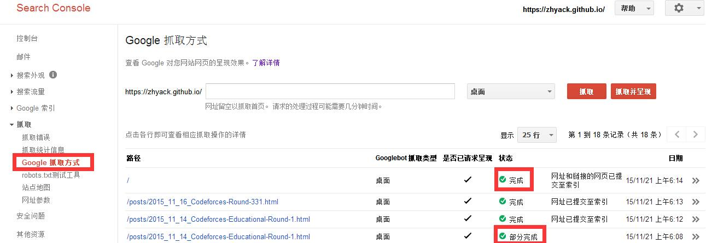

Zhy's Blog~

使用Github Pages定制个人主页经验
博主本人曾经用过新浪等平台的博客，但很快都弃坑了，总结起来就是——难以排版；页面老套，风格有限，难以定制；广告飞满天，阅读体验毫无。但如果自己开服定制个人主页，又存在服务器租用、配置、维护，域名购买等各种麻烦的事情，不适合我等小白实践。如果像我一样只是寻求一个平台简单地搭一个个人博客，乱发一些文章，欢迎围观我的实践经验，更欢迎和我分享不一样的经验。(Email Me)
这篇经验包含以下内容：
使用Github Pages创建主页
首先，我们需要一个Github账号。在这里完成注册并登录，强烈建议username简短好记，因为这个将会影响到域名。密码最好也能简短一点，因为今后要频繁输入。

登入之后，创建一个新的仓库(Repository)。

这个页面，只有Repository name是必须填写为 用户名.github.io 的。比如之前注册的时候用户名是example的话，现在就要填写为example.github.io，这也会是之后主页的域名。
进入你创建的仓库，注意右侧红框。
这个时候已经可以自主建站了。如果你有坚实的建站基础，可以自行提交网站内容；入门级/怕折腾的同学可以进行如下操作。

进入Settings，选择Launch automatic page generator，根据提示自动生成网站。有多个主题可选，博主本人使用的是Minimal这个主题。

提交以后，可以在仓库中看到多了很多文件，如index.html。等待几分钟，在浏览器中输入主页的域名，即 用户名.github.io，即可看到刚刚选择的模板生成出来的主页。到此创建主页搞定。
除了官方模板之外，还有Jekyll模板可用，如果不想完全自己定制，使用这些模板是一个不错的选择，当然对于模板怎么使用，需要自己查阅相关文档。
同步到Github以显示主页更新
当然，我们目前还不能切实地编辑什么。
在Git官网上下载Git并安装。
在本地创建一个文件夹存放你github的仓库。
通过Git控制台cd进入你的git文件夹。
输入以下命令对Git进行配置：
git config --global user.name "username"
git config --global user.email "email"其中username 和 email 是你的github账号对应的信息。
使用git clone <url>命令将你远在github上的仓库同步到本地。其中<url>指的是你对应仓库下提供的链接，如图红框。
比如，我将仓库克隆的本地的命令：
git clone https://github.com/zhyack/zhyack.github.io.git这样，你的整个仓库都搬到了本地，可以随意编辑。 当然，本地的编辑是不会实时同步到github的。
当你对本地做了一定的修改，想同步到github上通过主页显示出来的时候，打开Git控制台，cd到仓库根目录，依次输入以下命令：
git add .
git commit -m "info"
git push origin master其中，info是你为当前版本提供的注释（提示信息），三条命令过后会弹出对话框要求你输入github的账号密码，几秒之后github上的仓库即可更新，一分钟左右主页上即可体现更新内容。
定制主页风格与维护
在此模块中分享一些个人风格定制的一些经验，不断更新中...
在各种模板的css文件里，大都指定其使用的字体，如：

如果对应目录里并没有相应字体文件（文件名大小写敏感），则会使用系统默认字体。初看不明显，但是会对网页内容的爬取造成很大影响。
对于博主本人使用的Minimal模板，并没有提供fonts文件，需要自行创建，本人从谷歌官方字体中淘来Noto-Sans系列字体并加以转换，形成可用的字体文件，诸位可到我的仓库中提取。

虽然比较细节，但希望是各位强迫症患者的福音。
首先，找到你喜欢的图片，在网上搜到工具将其转化成ico文件。
然后，在你的网页代码头部<head>标签中添加：
<link rel="shortcut icon" href="../pics/favicon.ico"/>
<link rel="bookmark" href="../pics/favicon.ico"/>
其中href指向你的ico文件保存的路径。
Github Pages的404页面制作很简单，只需自己创建一个html文件制作，然后命名为404.html，并放在仓库根目录下就好了。
需要注意的是404页面的寻址(各种链接的路径)方式和其他页面的不同，其他页面均可用../表示根目录，而404页面不可，其中一种解决方法是将404页面的路径全部替换为网络路径，如https://zhyack.github.io/...
个性化设置，添加了大量图片？网页打开相当慢？多图预警？
首先jpg格式的图片普遍压缩效果比较好；如果有进一步需要，推荐图好快，简单实用的在线图片压缩网站，质量损失较小，图片压缩效果明显。选择普通+缩放100%即可达到很好效果。
搭建博客一段时间之后发现使用各种工具都会面临协议不统一导致的各种问题。如Google Webmaster上会把http协议的和https协议的网页当作不同的页面，disqus甚至会把'http://../index.html'，'http://../'，'https://../index.html'，'https://../'这些全都作为不同的页面，其中最主要的问题还是http和https的问题，导致通过不同协议浏览你的博客的人看到的评论是不同的...处理这个问题的方式也比较简单——当这个页面被http协议访问时，强制重定向为https协议即可。这个功能使用js即可实现。将下面的代码粘贴到所有页面的head标签中即可。
<script type="text/javascript"> var targetProtocol = "https:"; if (window.location.protocol != "file:" && window.location.protocol != targetProtocol window.location.href = targetProtocol + window.location.href.substring(window.location.protocol.length); </script>
推荐CNZZ的吧，统计的数据基本没有缺漏，而且还有各种形式的数据分析，添加到站点上也很容易。
登陆到CNZZ创建账号并按提示添加站点，CNZZ便会提供给你一系列站长统计的代码，复制粘贴到html页面body内容结束前的任一位置均可，生成的页面上就会出现相应的小图标（比如本站的左下角）或文字链接，只有添加上这些代码的页面才会有统计信息。注意生成的代码是唯一的，不要在网上粘贴别人的代码。
和站长统计添加的方式差不多，推荐Disqus。同样是注册账号，根据提示操作生成代码并粘贴到网页相应位置。
需要提醒的是，生成代码的页面很难找，在右下角灰色的链接：

点击这个链接，然后Start Using Engage，把站点信息填好之后，找到Installing Disqus，平台选择Universal的：

之后可以在这个页面管理你的网站评论功能。
还需要提醒的是，IE浏览器打不开disqus的一些页面，最好用Chrome内核的浏览器；尝试在本地预览评论功能的效果是徒劳的，上传到Github上在网页上显示才会加载出来评论模块。
Disqus效果做的很棒；记得在设置里设置允许访客评论的功能，这样大家就不必为了简单问个问题或者褒贬一下而麻烦去注册disqus账号了。
向Google推送你的主页
使用Github Pages搭建的主页并不能被百度爬取！！！百度不到你的Github博客，并不是因为你的主页排名不靠前，而是 github屏蔽了百度的爬虫。 如果真的想在百度上展示你的博客，github之外的服务器是必须的，具体方法自行搜索。
虽然github允许google爬取其内容，但新的网站没有任何外部链接，很难得到google爬虫的临幸。这个时候需要我们自己做一些工作向谷歌推送我们的网站。
使用google的Webmaster，需要注册一个谷歌邮箱，然后根据提示加入自己的博客地址，这些步骤略过，只需按提示操作即可，最终站点根目录中会加入以下两个文件：

其中，sitemap文件的创建可以自行搜索相应工具实现。
相信各位看官都可以自行完成添加站点。提交sitemap一天后，应该就可以google到自己博客的相关页面，如不能，请详细阅读相关提示（爬取错误等）。
唯一需要提的一点，就是等待google的robot爬取自己的页面会很慢，往往需要很久才能显示，目前观察到的爬取周期是一天；所以比较好的做法是自行推送——每次更新文章后，记得添加到sitemap，然后在Webmaster中找到Google抓取方式一栏，输入想要手动推送的页面地址，抓取并呈现，然后提交至索引，即可很快看到相关页面已经可以被google搜索到了。

如果提交至索引时显示部分完成，则很有可能仍然google不到你的页面，那就是因为网站页面中存在错误(如404错误)，不能被索引。比如，我上图中出现的问题就是Minimal模板的fonts文件不存在，导致文本都识别不出来。错误详情可以点击查看。
其他使用细节有待各位自行体验了~